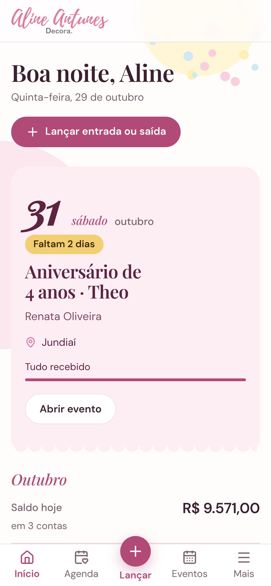
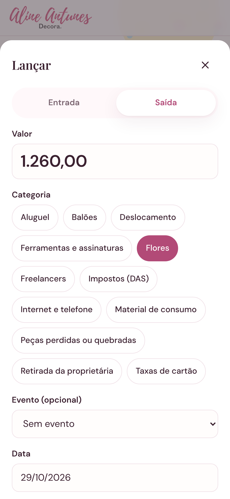
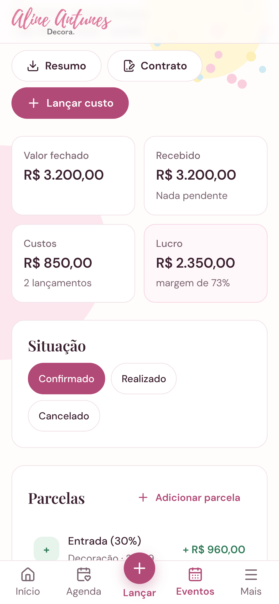
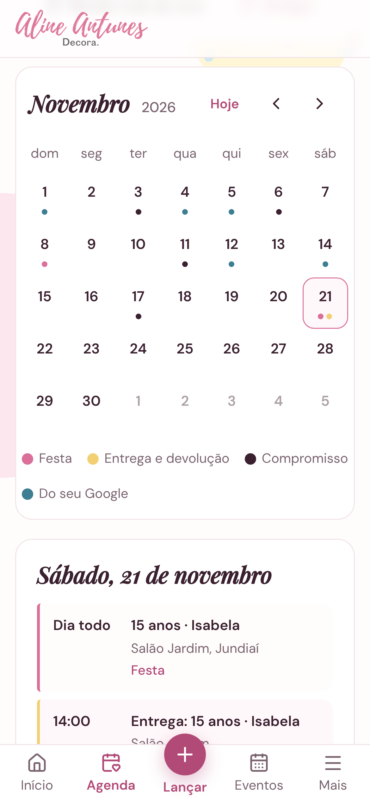

Sem saber o lucro de cada evento, quanto dava para retirar no mês ou quantos meses o caixa aguentava.
Pelo celular, entre uma montagem e outra.

Custos lançados no evento, margem calculada sozinha.

E ela conversa com o Google Agenda que a Aline já usa.
